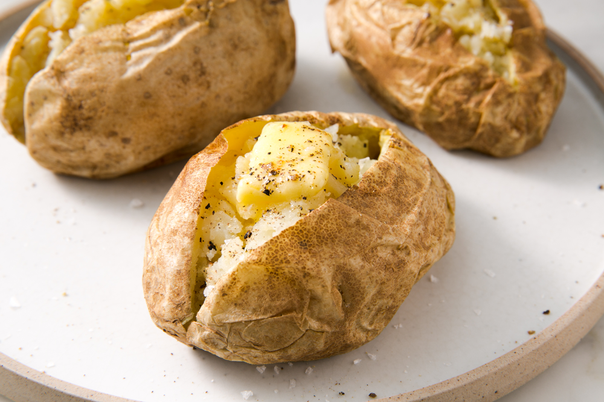

Italian Baked Potatoe
WHAT ARE THE BEST POTATOES FOR BAKING? To start, you need to choose the best type of potato. As you remember from our ultimate potato guide that we shared last year, Russet potatoes are the best for baking. They are a high starch potato that when baked, lend a light, mealy texture.
WHAT IS THE BEST WAY TO BAKE A POTATO? If you love the restaurant-style, crispy skin baked potatoes, here’s how you get it. Wash and dry 4 large Russet potatoes. Rub olive oil all over the outside of the potatoes, then rub salt on them. Be generous with both the oil and the salt.
IS IT BETTER TO BAKE POTATOES IN FOIL? You will often see recipes for wrapping a potato in foil. Although this works, we don’t believe this is best. The potato actually gets “steamed” and the skin will not get crispy if it is baked wrapped in foil. For that reason, we say no foil is best!
Cooking Instructions
For Baked Potatoe
- Preheat the oven to 425 degrees.
- Wash and dry the potatoes.
- Pierce the potato 2-3 times with a fork.
- Rub oil all over the potatoes.
- Rub salt all over the potatoes.
- Place the potatoes on a baking sheet and bake for about 45 minutes. The exact baking time will depend on how large the potatoes are. The potato should be tender inside if you poke a fork into it.
- Serve with butter, cheese, chives, sour cream and all of your favorite toppings!
ServingInstructions
For Italian Cuisine
- Take your time.
- Wash and dry your hands
- Pierce the potato 2-3 times with a fork.
- And then and ten whatever.
- Rub salt all over the potatoes.
- Place the potatoes on a baking sheet and bake for about 45 minutes. The exact baking time will depend on how large the potatoes are. The potato should be tender inside if you poke a fork into it.
- Serve with butter, cheese, chives, sour cream and all of your favorite toppings!
Ingredients
| Quantity | Ingredient |
| 300 g | Butter, softened |
| 2 spoons | Black Pepper |
| 100g spice | Aromate |
| 2 pinchh | Grass |
| 400 g | Qanda |
| 150 ow | Goat |